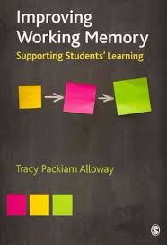
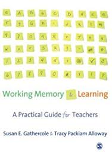
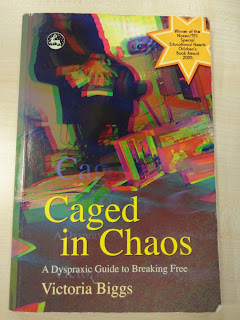
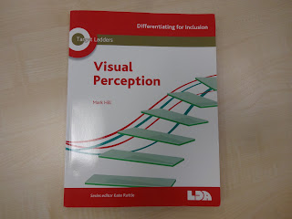
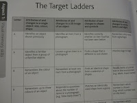
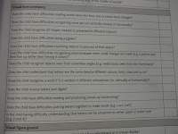
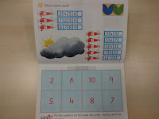
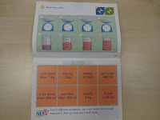
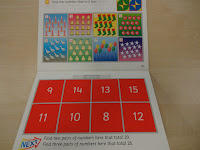
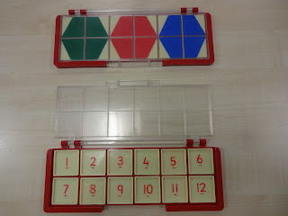

Improving Working Memory: Supporting Students’ Learning
Tracy Packiam Alloway
Tracy Packiam Alloway has done extensive research into working memory. For further reading visit www.tracyalloway.com.
Books and websites that Helen has read and would recommend.
Working memory difficulties have a huge impact on dyslexic children, yet many parents and teachers do not really understand what working memory is. These two books offer insights and practical advice for supporting children with working memory difficulties.

Tracy Packiam Alloway
Tracy Packiam Alloway has done extensive research into working memory. For further reading visit www.tracyalloway.com.

Susan E. Gathercole and Tracy Packiam Alloway
A practical guide that explains working memory and how to support children who struggle with it.
Liz Dunoon
Realising that your child may be dyslexic can be daunting as a parent. This book will help you make sense of the difficulty and know how to move forward.
“This book will show you how to ensure your child's success at school and in life. It provides a complete guide for parents and teachers to help children with learning difficulties in particular, dyslexia. ‘Helping Children With Dyslexia’ has helped thousands of families to navigate and overcome the barriers preventing their child from doing well at school. It provides the latest research and strategies from some of the worlds leading dyslexia experts as well as advice from parents who have children with learning difficulties. You will learn how to tell if your child is dyslexic, find the right school for your child, choose the right remedial programs, identify their strengths, build their confidence and work with the education system to help them achieve learning success.” Amazon UK

Victoria Biggs
Dyspraxia is an area many people do not really understand. It can overlap with dyslexia, but it brings many unique and challenging difficulties.
Victoria Biggs describes from first-hand experience what it is like to be dyspraxic. She highlights the social difficulties and anxiety that many people do not appreciate. A very interesting and informative read.
You can also connect with the Dyspraxia Foundation for practical advice and support for parents, children and educators.

LDA
Following on from my article about visual difficulties, this is an excellent guide for teachers and inclusion specialists who want to understand visual perception better.
It is a clear, practical book with checklists to identify the full range of visual perceptual difficulties, and “Target Ladders” to help plan effective support or interventions.
Available at www.amazon.co.uk


This excellent book really gives food for thought. Many people are unaware that gifted children can have learning difficulties, or that many recognised characteristics of gifted children can be misinterpreted as learning difficulties.
Even health professionals and teachers can end up focusing on the child’s behaviour rather than the reason for it. A child’s strengths and giftedness can be completely missed while everyone focuses on their weaknesses. This can lead to frustration, isolation and depression.
Parents may find specific chapters useful. Friends, family or teachers may suggest that a child has ADHD or is autistic without seeing the whole picture.
All teachers should read this book to understand the range of children in their classes and support them and their families appropriately.
“Our brightest, most creative children and adults are often being misdiagnosed with behavioral and emotional disorders such as ADHD, Oppositional-Defiant Disorder, Bipolar, OCD, or Aspergers. Many receive unneeded medication and inappropriate counseling as a result. Physicians, psychologists, and counselors are unaware of characteristics of gifted children and adults that mimic pathological diagnoses. Six nationally prominent health care professionals describe ways parents and professionals can distinguish between gifted behaviors and pathological behaviors. These authors have brought to light a widespread and serious problem, the wasting of lives from the misdiagnosis of gifted children and adults and the inappropriate treatment that often follows.” Jack G. Wiggins, Ph.D., Former President, American Psychological Association
One of my favourite resources is Stile trays. In most of the schools I have worked in they are an under-used resource, mainly because many teachers do not know what they are for or how they work.
Stile trays appeal to children of all ages and abilities. Here is why:






They can also be used with older students if appropriate.


Available from www.ldalearning.com or www.findel-education.co.uk